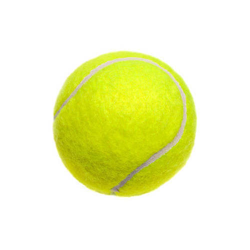

Oscar
Programmer
I used to be a big-shot in the Stock Exchange market until I found my true call: coding.
Check-it out
I used to be a big-shot in the Stock Exchange market until I found my true call: coding.
Check-it out|  |
Chasing ballsI'm crazy about those. Let them come through the air, boucing, falling vertically onto your nose... I don't care, I gotta have them. |
Toilet waterSome people say that it's a gross habit and it's not good for you, but the water never feels so fresh as from the toilet |
|
Chewing slippersI like to come home after a busy day and chew my old slippers in front of the TV. This is the best way to recharge batteries |
This page has been coded during the FullStack program @LeWagon. That was probably the best experience of my entire life.